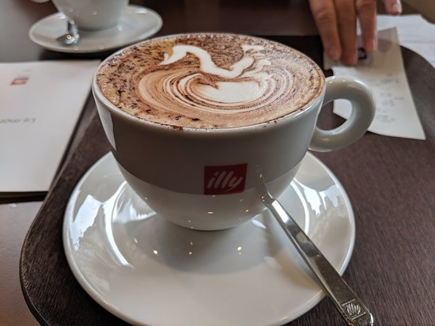

Cafe
Autor: Angel Nahum Aguilar Martinez

Definicion:
Una cafetería es un establecimiento donde se sirve café. Por lo general estos recintos también ofrecen otras infusiones y bebidas, e incluso ciertos tipos de comida.